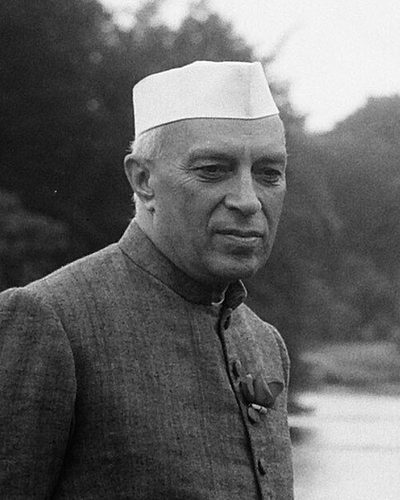

Ideologies / Nationalist
What is Nehruvian Secular Nationalism?
Nehruvian Secular Nationalism is a political ideology in the Nationalist family. Written in prison, the book reads Indian history as a long process of absorbing and blending many peoples, faiths and languages into one composite culture. India's nationhood rests on that shared civilisation and not on any single religion. Nehru wanted an independent India that is democratic and secular, guided by a scientific temper in place of dogma, and that ends poverty through planning and industry.
One nation out of many faiths and languages.
Defined from: Jawaharlal Nehru, The Discovery of India (1946)
See how close you are to Nehruvian Secular Nationalism Dare a friend to answer as one


Where Nehruvian Secular Nationalism stands on 13 axes
Each axis runs from 0 to 100. A score of 50 is the middle. On a classic compass it sits in the Libertarian Left quadrant.
| Axis | Position | Score | In words |
|---|---|---|---|
| EconomyMarket to Planned | 70 | Strongly Planned | |
| OwnershipPrivate to Collective | 60 | Leans Collective | |
| RightsLiberty to Security | 35 | Leans Liberty | |
| GovernmentDemocracy to Autocracy | 10 | Very strongly Democracy | |
| StructureDecentralised to Centralised | 70 | Strongly Centralised | |
| NationInternationalist to Nationalist | 65 | Leans Nationalist | |
| ImmigrationMulticulturalist to Assimilationist | 15 | Very strongly Multiculturalist | |
| ValuesProgressive to Traditional | 25 | Strongly Progressive | |
| TechnologyAccelerationist to Precautionary | 10 | Very strongly Accelerationist | |
| EnvironmentIndustrialist to Environmentalist | 20 | Strongly Industrialist | |
| ReligionSecular to Religious | 10 | Very strongly Secular | |
| MilitaryPacifist to Militarist | 30 | Strongly Pacifist | |
| TradeFree Trade to Protectionist | 80 | Strongly Protectionist |
Ideologies closest to Nehruvian Secular Nationalism
- Democratic Socialism81% alike
- Austromarxism81% alike
- Fabianism81% alike
- Eurocommunism80% alike
- Lassalleanism79% alike
Its opposite on this map is Radical Traditionalism, at 30%.
Parties near Nehruvian Secular Nationalism
- Popular UnityChile. Programa básico de gobierno de la Unidad Popular (1969)88% alike
- Indian National CongressIndia. The Karachi Resolution (1931)85% alike
- American Popular Revolutionary AlliancePeru. El antiimperialismo y el APRA (1936)83% alike
- African National CongressSouth Africa. Let's Do More, Together (2024)83% alike
Common questions
What is Nehruvian Secular Nationalism?
Nehruvian Secular Nationalism is a political ideology in the Nationalist family. Written in prison, the book reads Indian history as a long process of absorbing and blending many peoples, faiths and languages into one composite culture. India's nationhood rests on that shared civilisation and not on any single religion. Nehru wanted an independent India that is democratic and secular, guided by a scientific temper in place of dogma, and that ends poverty through planning and industry.
What does Nehruvian Secular Nationalism believe?
In one line: One nation out of many faiths and languages. Its strongest positions are Democracy, Accelerationist, Secular. Written in prison, the book reads Indian history as a long process of absorbing and blending many peoples, faiths and languages into one composite culture. India's nationhood rests on that shared civilisation and not on any single religion. Nehru wanted an independent India that is democratic and secular, guided by a scientific temper in place of dogma, and that ends poverty through planning and industry.
Who founded Nehruvian Secular Nationalism?
Nehruvian Secular Nationalism is defined here from The Discovery of India (1946) by Jawaharlal Nehru. The thinker most tied to it is Jawaharlal Nehru (1889 to 1964).
Is Nehruvian Secular Nationalism left wing or right wing?
On a classic two axis compass Nehruvian Secular Nationalism falls in the Libertarian Left quadrant, which means the economic left and the libertarian side. Left and right hide a lot, though, which is why EthosScales scores it on thirteen separate axes.
How is Nehruvian Secular Nationalism different from Democratic Socialism?
They are close: 81% alike. The biggest gaps are on Nation, where Nehruvian Secular Nationalism scores 65 and Democratic Socialism scores 35, and Trade, where Nehruvian Secular Nationalism scores 80 and Democratic Socialism scores 50. On each axis, 0 is one end and 100 is the other.
Think this is wrong? Suggest a correction. The scores are editorial estimates.